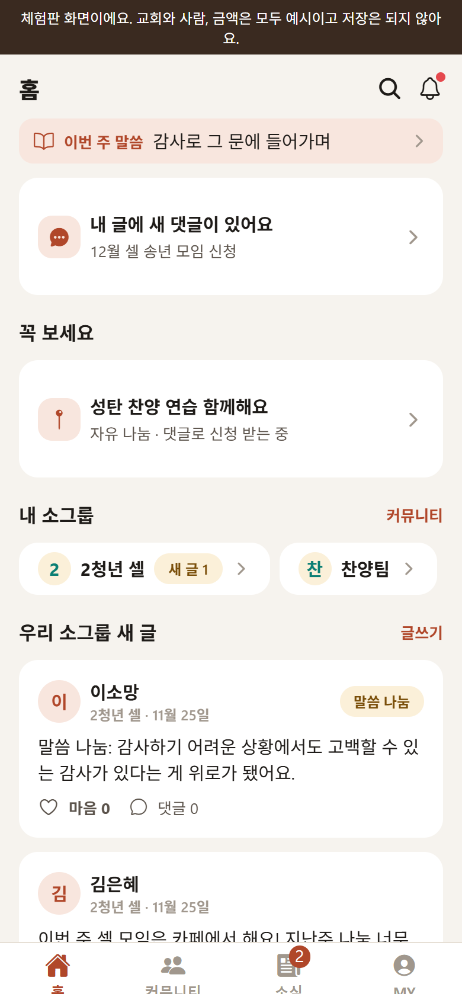
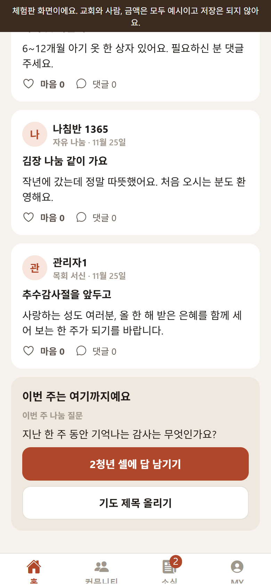

KNITUS 니터스
홈을 열면 말씀보다 교인 글이 먼저 보이게 한 시안
교인이 앱을 다시 여는 이유는 설교보다 아는 사람의 소식에 가깝다는 판단으로 홈 첫 화면을 바꿨습니다. 말씀과 공지는 없애지 않고 한 줄씩으로 줄였습니다. 실제 서비스에는 반영하지 않았습니다. 2026년 11월 27일.
숫자로 보면
휴대폰 화면(390×844) 한 장 기준입니다.
| 항목 | 지금 | 시안 |
|---|---|---|
| 말씀이 차지하는 첫 화면 높이 | 약 31% | 약 5% |
| 첫 화면에 보이는 교인 글 | 0개 | 1개 반 |
| 첫 화면에서 누를 수 있는 곳 | 20 | 17 |
꼭 보세요와 새 댓글 알림을 한 번씩 열어 보면 그 줄이 빠지면서 글이 더 올라옵니다.
첫 화면



바꾼 것
- 이번 주 말씀은 한 줄로 줄였습니다. 누르면 지금처럼 말씀 화면(요약, 나눔 질문)이 열립니다. 이번 주 말씀이 없는 교회는 오늘의 말씀 한 줄이 나옵니다.
- 맨 위에 나에게 온 반응을 둡니다. 읽지 않은 "새 댓글", "새 답글"을 글마다 한 줄씩, 최대 2개까지. 다시 들어올 이유가 가장 큰 것이라 가장 위에 두었습니다.
- 꼭 보세요는 아직 읽지 않은 중요 공지만, 최대 2개까지 보여 줍니다. 한 번 누르면 홈에서 사라집니다. 위 반응 줄에 이미 나온 글은 같은 글이라 뺐습니다.
- 피드는 "우리 소그룹 새 글"을 먼저, 그 아래에 "교회 새 글"을 둡니다. 서로 아는 사람의 글이 먼저 보입니다.
- 끝까지 내리면 다음 글을 이어서 불러옵니다. "더 보기" 버튼은 없앴습니다.
- 피드 끝에는 빈 화면 대신 쓸거리를 둡니다. 아래 그림을 보세요.
- 글이 적은 교회(최근 7일 글이 5개보다 적은 곳)는 지금처럼 소식 중심 화면이 나옵니다. 글이 늘면 저절로 이 화면으로 바뀝니다.
지난번 고를 것 줄이기 시안(바로가기 칩 빼기, 커뮤니티 새 글 바로 보기, 글쓰기 올릴 곳 기본값, MY 줄이기) 위에 이어서 만들었습니다.
피드 끝
교인 100명 교회라면 글은 일주일에 몇 개 정도라 금방 끝에 닿습니다. 끝에 닿았을 때 비어 있으면 앱이 죽은 것처럼 보이므로, "이번 주는 여기까지예요"와 함께 이번 주 나눔 질문을 보여 주고 바로 답을 남기게 했습니다. 답 하나가 다음 사람이 볼 글이 됩니다.


시안을 눌러 볼 때
- 체험판은 저장이 되지 않아 알림을 읽어도 기록이 남지 않습니다. 그래서 "내 글에 새 댓글이 있어요" 줄은 다시 열면 또 보입니다. 실제로는 한 번 읽으면 사라집니다.
- 꼭 보세요는 이 기기에 기억해 두어, 한 번 누르면 다시 열어도 나오지 않습니다.
시안은 실제 서비스와 따로 보관했고, 실제 서비스와 기존 체험판(지금 앱 열기)은 바뀌지 않았습니다.
반영하기로 하면 함께 할 일이 있습니다. 중요 공지를 읽었는지를 서버에 남기고, 소그룹 글을 먼저 보여 주는 순서를 서버에서 정합니다. 그리고 씨앗 교회 4주 동안 확인할 수 있게 말씀 줄과 반응 줄이 눌린 횟수, 피드를 어디까지 내렸는지를 기록합니다.